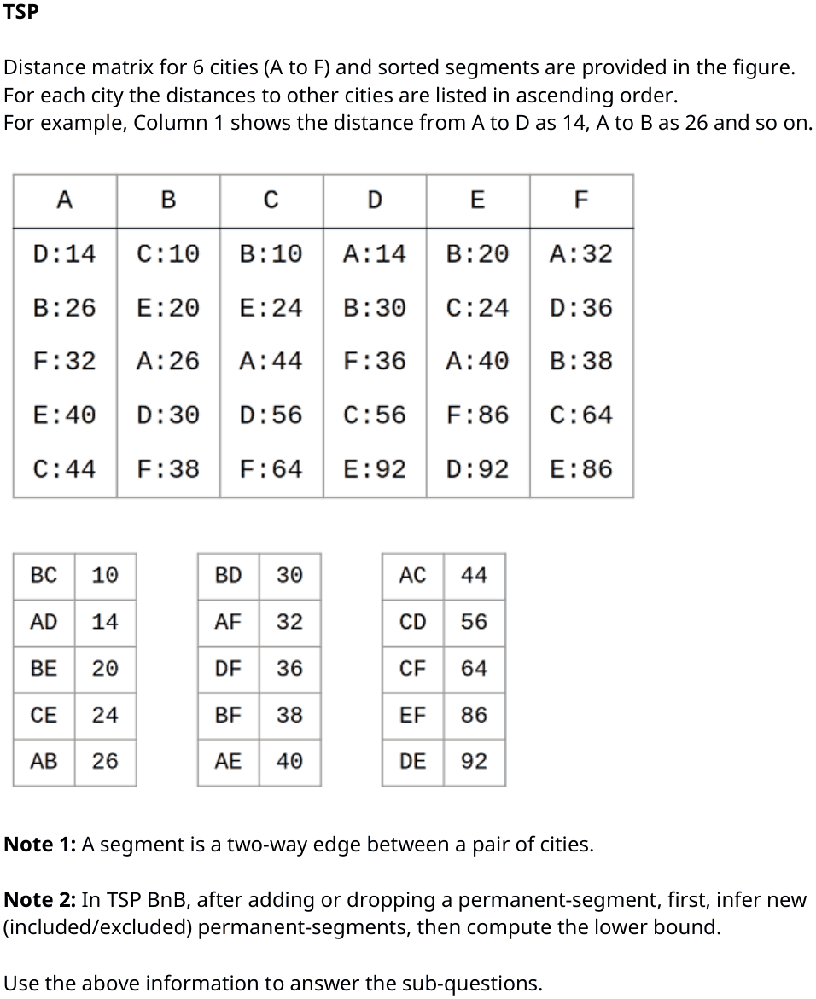
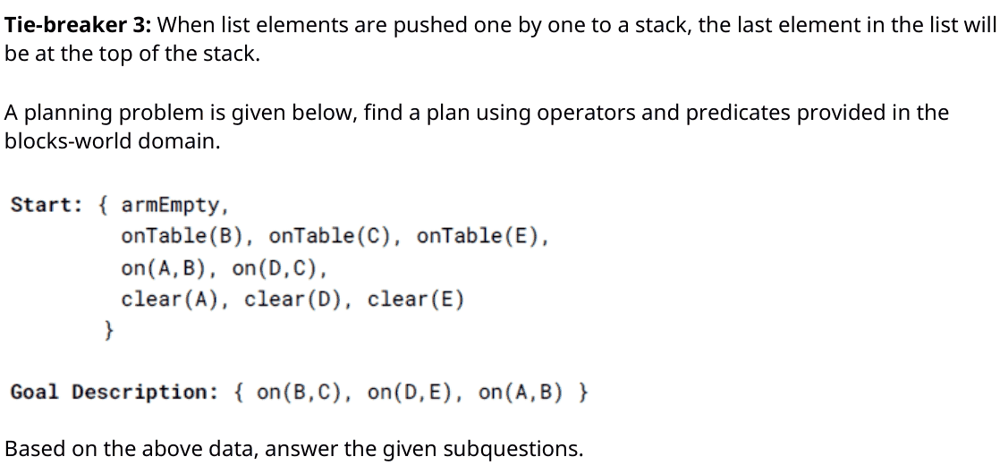

AI Quiz 2 · 2026 Term 1 — Study guide
- Time budget: ≈ 1 min per mark. Map trace ≈ 4 min, TSP node ≈ 3 min, game tree ≈ 3 min, planning ≈ 4 min.
- Order of attack: write h-values / sorted edge list / leaf values first, then the questions fall out one by one.
- Every trace below is machine-generated and cross-checked with the official key (✓ column); a ✗ would flag a transcription issue.
Q1–Q7Search · A*, WA*, Branch-and-Bound7 marks
Lesson · Week 5 · A*, WA*, Branch-and-Bound on maps
The three algorithms in one table
| Priority (lowest first) | Guarantee | |
|---|---|---|
| A* | f = g + h | optimal if h admissible (graph search also needs consistency, or re-opening) |
| WA* (w) | f = g + w·h | cost ≤ w × optimal if h admissible — not optimal in general |
| Branch & Bound | g only (h = 0) | always optimal (uniform-cost behaviour on positive costs) |
Bookkeeping that the exam checks
- Each node is a (state, parent, g) record. Refined/expanded = popped from OPEN, not generated.
- Pop the lowest f. Tie → alphabetical (read the tie-breaker line every time).
- For every neighbour m of the popped node n: if new → add to OPEN with parent n; if already on OPEN/CLOSED with a larger g → re-parent to n (and re-open if it was in CLOSED).
- Stop when the goal is popped (not when generated). Path = follow parents back.
Admissibility test in 30 seconds
h is admissible iff h(n) ≤ h*(n) for every n, where h* is the true cheapest cost to G. To refute, find one violation. Fast hunt: look at G's neighbours first — if h(n) > cost(n→G) you are done. Manhattan distance is admissible only when every edge costs ≥ its grid length; the exam maps deliberately use cheap edges (cost 2 across 3 tiles, etc.) so the answer is almost always No.
Tricks for speed
- Write the h-value beside every node first (Manhattan = |Δx|+|Δy|, count tiles on the figure).
- A* with an inadmissible h can return a sub-optimal path: the goal gets popped through a path that looked cheap because h over-estimated the good branch.
- WA* with larger w behaves more greedily (head straight to G); with w=1 it is A*, with w→∞ it is Best-First.
- BnB on these maps = Dijkstra from S; its popped cost at G is the optimal cost. Use it to check whether A*/WA* paths are optimal.
Question data

Worked solution
| node | A | B | C | D | E | F | G | S |
|---|---|---|---|---|---|---|---|---|
| h | 7 | 7 | 3 | 6 | 10 | 7 | 0 | 8 |
| h* (true cost to G) | 2 | 4 | 4 | 6 | 10 | 7 | 0 | 12 |
h* is Dijkstra distance from G. A red h* means h > h* there, i.e. h over-estimates → inadmissible.
A* (f = g + h) — optimal cost from BnB/Dijkstra is 12
| # | refine | g | h | f=g+h | parent | children generated (↻ = cheaper parent found) | OPEN after (node f·parent) | CLOSED |
|---|---|---|---|---|---|---|---|---|
| 1 | S | 0 | 8 | 8 | – | B(g8,f15), E(g3,f13) | E13·S, B15·S | S |
| 2 | E | 3 | 10 | 13 | S | F(g7,f14) | F14·E, B15·S | S, E |
| 3 | F | 7 | 7 | 14 | E | C(g10,f13), D(g11,f17) | C13·F, B15·S, D17·F | S, E, F |
| 4 | C | 10 | 3 | 13 | F | A(g18,f25), G(g14,f14) | G14·C, B15·S, D17·F, A25·C | S, E, F, C |
| 5 | G | 14 | 0 | 14 | C | GOAL ✔ | S, E, F, C, G |
WA* with w = 2 (f = g + 2·h)
| # | refine | g | h | f=g+2h | parent | children generated (↻ = cheaper parent found) | OPEN after (node f·parent) | CLOSED |
|---|---|---|---|---|---|---|---|---|
| 1 | S | 0 | 8 | 16 | – | B(g8,f22), E(g3,f23) | B22·S, E23·S | S |
| 2 | B | 8 | 7 | 22 | S | A(g10,f24), D(g10,f22) | D22·B, E23·S, A24·B | S, B |
| 3 | D | 10 | 6 | 22 | B | C(g14,f20), F(g14,f28) | C20·D, E23·S, A24·B, F28·D | S, B, D |
| 4 | C | 14 | 3 | 20 | D | G(g18,f18) | G18·C, E23·S, A24·B, F28·D | S, B, D, C |
| 5 | G | 18 | 0 | 18 | C | GOAL ✔ | S, B, D, C, G |
Branch-and-Bound (h = 0 ⇒ f = g)
| # | refine | g | h | f=g | parent | children generated (↻ = cheaper parent found) | OPEN after (node f·parent) | CLOSED |
|---|---|---|---|---|---|---|---|---|
| 1 | S | 0 | – | 0 | – | B(g8,f8), E(g3,f3) | E3·S, B8·S | S |
| 2 | E | 3 | – | 3 | S | F(g7,f7) | F7·E, B8·S | S, E |
| 3 | F | 7 | – | 7 | E | C(g10,f10), D(g11,f11) | B8·S, C10·F, D11·F | S, E, F |
| 4 | B | 8 | – | 8 | S | A(g10,f10), D↻(g10,f10) | A10·B, C10·F, D10·B | S, E, F, B |
| 5 | A | 10 | – | 10 | B | G(g12,f12) | C10·F, D10·B, G12·A | S, E, F, B, A |
| 6 | C | 10 | – | 10 | F | none new | D10·B, G12·A | S, E, F, B, A, C |
| 7 | D | 10 | – | 10 | B | none new | G12·A | S, E, F, B, A, C, D |
| 8 | G | 12 | – | 12 | A | GOAL ✔ | S, E, F, B, A, C, D, G |
Which algorithms return an optimal path?
| algorithm | path found | cost | optimal (12)? |
|---|---|---|---|
| A* | S,E,F,C,G | 14 | no |
| Branch & Bound | S,B,A,G | 12 | yes |
| Breadth-First | S,B,A,G | 12 | yes |
| Hill Climbing | S,B,D,C,G | 18 | no |
| WA* (w=2) | S,B,D,C,G | 18 | no |
BFS minimises the number of edges, not the cost — it is optimal here only because the 3-edge route also happens to be the cheapest. Hill climbing never backtracks and follows the best neighbour by h alone.
Answer sheet
| Q | asks for | answer | key | why / how |
|---|---|---|---|---|
| Q1 | 2nd–4th nodes refined by A* | E,F,C | ✓ | refine order after S = pop order of OPEN by lowest f |
| Q2 | final A* path | S,E,F,C,G | ✓ | follow parent pointers back from G; cost 14 — not optimal (optimal 12) because h is inadmissible |
| Q3 | WA* (w=2) path | S,B,D,C,G | ✓ | w=2 inflates h, so the search dives toward G; cost 18 (optimal 12) |
| Q4 | BnB path cost | 12 | ✓ | BnB with h=0 expands in order of g, so the cost at which G is popped is the optimal cost |
| Q5 | algorithms that find an optimal path | BC | ✓ | an algorithm is optimal iff its returned path has cost = Dijkstra optimum |
| Q6 | Is h admissible? (A=Yes, B=No) | B | ✓ | violations: A: h=7>h*=2, B: h=7>h*=4 |
| Q7 | A* drops neighbours already in OPEN/CLOSED? (A=True, B=False) | B | ✓ | False — neighbours already on OPEN/CLOSED are not simply dropped: if the new path to them is cheaper, A* re-parents (and re-opens) them |
Q8–Q10TSP Branch-and-Bound3 marks
Lesson · Week 5 · TSP Branch-and-Bound (include / exclude segments)
Search tree
Root S0 = all tours. Pick the shortest undecided segment xy (tie → alphabetical). Child 1 = S0 + xy (include), child 2 = S0 + ~xy (exclude). Always refine the open node with the smallest lower bound; stop when the cheapest open node is a complete tour.
Lower bound of a node
For each city take the two cheapest allowed edges (permanently-included edges are forced in; excluded ones are not allowed), sum over all cities, then divide by 2 (each segment is counted at both ends).
Inference rules — apply until nothing changes
- Degree 2 reached: a city with 2 included segments → exclude all its other segments.
- Only two options left: a city with exactly 2 non-excluded segments → include both.
- No sub-tours: an included path that would close into a cycle shorter than N cities → exclude the closing segment.
Counting tours in a node: after full inference, the number of Hamiltonian cycles that contain every included and avoid every excluded segment. (N cities → (N−1)!/2 tours in S0: 5→12, 6→60.) Included + excluded counts usually give the fastest sanity check: if included = N the node is a single tour.
Question data

Worked solution
Distance matrix & sorted segment list
| A | B | C | D | E | F | |
|---|---|---|---|---|---|---|
| A | · | 26 | 44 | 14 | 40 | 32 |
| B | 26 | · | 10 | 30 | 20 | 38 |
| C | 44 | 10 | · | 56 | 24 | 64 |
| D | 14 | 30 | 56 | · | 92 | 36 |
| E | 40 | 20 | 24 | 92 | · | 86 |
| F | 32 | 38 | 64 | 36 | 86 | · |
Sorted segments (cheapest first): BC10 < AD14 < BE20 < CE24 < AB26 < BD30 < AF32 < DF36 < BF38 < AE40 < AC44 < CD56 < CF64 < EF86 < DE92
Root S0: lower bound
| city | two cheapest allowed segments | sum |
|---|---|---|
| A | AD=14 + AB=26 | 40 |
| B | BC=10 + BE=20 | 30 |
| C | BC=10 + CE=24 | 34 |
| D | AD=14 + BD=30 | 44 |
| E | BE=20 + CE=24 | 44 |
| F | AF=32 + DF=36 | 68 |
| Σ | 260 → ÷2 = 130 |
Each city contributes its two cheapest segments; halve the total because every segment is counted at both ends.
Segment inference for the node (S0,BC,AD,BE,~AB,AF)
Given in node (S0,BC,AD,BE,~AB,AF): include BC, AD, BE, AF; exclude AB.
| # | because… | ⇒ |
|---|---|---|
| 1 | A already has 2 included segments (AD, AF) | exclude AC |
| 2 | A already has 2 included segments (AD, AF) | exclude AE |
| 3 | B already has 2 included segments (BC, BE) | exclude BD |
| 4 | B already has 2 included segments (BC, BE) | exclude BF |
| 5 | path C–B–E would close into a sub-tour of 3 < 6 cities | exclude CE |
| 6 | path D–A–F would close into a sub-tour of 3 < 6 cities | exclude DF |
Permanently included (4): AD, AF, BC, BE Permanently excluded (7): AB, AC, AE, BD, BF, CE, DF
Tours still represented (2) and node cost
| city | two cheapest allowed segments | sum |
|---|---|---|
| A | AD=14 + AF=32 | 46 |
| B | BC=10 + BE=20 | 30 |
| C | BC=10 + CD=56 | 66 |
| D | AD=14 + CD=56 | 70 |
| E | BE=20 + EF=86 | 106 |
| F | AF=32 + CF=64 | 96 |
| Σ | 414 → ÷2 = 207 |
| tour | cost |
|---|---|
| ADCBEFA | 218 |
| ADEBCFA | 232 |
First segment to refine S0 and the node (S0,~BC)
Shortest undecided segment = BC (cost 10). Excluding it forces every other segment of B and C to be chosen from what is left:
| city | two cheapest allowed segments | sum |
|---|---|---|
| A | AD=14 + AB=26 | 40 |
| B | BE=20 + AB=26 | 46 |
| C | CE=24 + AC=44 | 68 |
| D | AD=14 + BD=30 | 44 |
| E | BE=20 + CE=24 | 44 |
| F | AF=32 + DF=36 | 68 |
| Σ | 310 → ÷2 = 155 |
Answer sheet
| Q | asks for | answer | key | why / how |
|---|---|---|---|---|
| Q8 | lower bound of (S0,~first segment) | 155 | ✓ | lower bound of (S0,~BC): recompute the two cheapest allowed segments per city, Σ ÷ 2 |
| Q9 | # tours in the node | 2 | ✓ | Hamiltonian cycles containing all included and none of the excluded segments |
| Q10 | # included, # excluded | 4,7 | ✓ | included count, then excluded count (full inference) |
Q11–Q15Games · best strategy, Alpha-Beta, SSS*5 marks
Lesson · Week 7 · SSS* (best-first game-tree search)
SSS* keeps an OPEN list of (node, status, h) ordered by h descending (an upper bound on the root value). Ties: newly inserted entries go in front of equal-h entries.
- Start with (root, LIVE, +∞). Pop the top entry.
- LIVE leaf → (leaf, SOLVED, min(h, eval)). LIVE MAX → push all children LIVE (same h). LIVE MIN → push only its first child LIVE.
- SOLVED node n with parent MAX → (parent, SOLVED, h) and purge every OPEN entry below that parent (the parent's other branches are no longer needed). SOLVED n, parent MIN → push the next sibling LIVE, or (parent, SOLVED, h) if n was the last child.
- Stop when (root, SOLVED, h) is popped: h is the minimax value.
Initial cluster = the leaves that become SOLVED before any smaller h appears — first-descent of the tree, one leaf per MIN pair. Leaves SOLVED later are the ones listed in "SOLVED (other than initial)" questions. A pruned-from-queue SOLVED leaf is one removed by the purge step without ever being popped.
Question data

Worked solution
Cut log
| node | cut | why | leaves pruned |
|---|---|---|---|
| MAX {F…G} | beta-cut after child 1 (value 30) | α=14, β=16 → value ≥ β | G |
| MIN {I…L} | alpha-cut after child 1 (value 10) | α=16, β=∞ → value ≤ α | J, K, L |
SSS* trace — entries are node.status.h (L = LIVE, S = SOLVED); OPEN is sorted top→bottom
| # | popped | pushed | purged | OPEN after |
|---|---|---|---|---|
| 1 | {A…L}.L.∞ | {A…D}.L.∞, {E…H}.L.∞, {I…L}.L.∞ | {A…D}.L.∞, {E…H}.L.∞, {I…L}.L.∞ | |
| 2 | {A…D}.L.∞ | {A…B}.L.∞ | {A…B}.L.∞, {E…H}.L.∞, {I…L}.L.∞ | |
| 3 | {A…B}.L.∞ | A.L.∞, B.L.∞ | A.L.∞, B.L.∞, {E…H}.L.∞, {I…L}.L.∞ | |
| 4 | A.L.∞ | A.S.24 | B.L.∞, {E…H}.L.∞, {I…L}.L.∞, A.S.24 | |
| 5 | B.L.∞ | B.S.22 | {E…H}.L.∞, {I…L}.L.∞, A.S.24, B.S.22 | |
| 6 | {E…H}.L.∞ | E.L.∞ | E.L.∞, {I…L}.L.∞, A.S.24, B.S.22 | |
| 7 | E.L.∞ | E.S.16 | {I…L}.L.∞, A.S.24, B.S.22, E.S.16 | |
| 8 | {I…L}.L.∞ | I.L.∞ | I.L.∞, A.S.24, B.S.22, E.S.16 | |
| 9 | I.L.∞ | I.S.10 | A.S.24, B.S.22, E.S.16, I.S.10 | |
| 10 | A.S.24 | {A…B}.S.24 | B.S.22 | {A…B}.S.24, E.S.16, I.S.10 |
| 11 | {A…B}.S.24 | C.L.24 | C.L.24, E.S.16, I.S.10 | |
| 12 | C.L.24 | C.S.14 | E.S.16, C.S.14, I.S.10 | |
| 13 | E.S.16 | {F…G}.L.16 | {F…G}.L.16, C.S.14, I.S.10 | |
| 14 | {F…G}.L.16 | F.L.16, G.L.16 | F.L.16, G.L.16, C.S.14, I.S.10 | |
| 15 | F.L.16 | F.S.16 | F.S.16, G.L.16, C.S.14, I.S.10 | |
| 16 | F.S.16 | {F…G}.S.16 | G.L.16 | {F…G}.S.16, C.S.14, I.S.10 |
| 17 | {F…G}.S.16 | H.L.16 | H.L.16, C.S.14, I.S.10 | |
| 18 | H.L.16 | H.S.16 | H.S.16, C.S.14, I.S.10 | |
| 19 | H.S.16 | {E…H}.S.16 | {E…H}.S.16, C.S.14, I.S.10 | |
| 20 | {E…H}.S.16 | {A…L}.S.16 | C.S.14, I.S.10 | {A…L}.S.16 |
| 21 | {A…L}.S.16 | — | DONE: root value 16 |
Initial cluster (leaves SOLVED on the first dive, h = ∞): A, B, E, I. Leaves SOLVED later: C, F, H. SOLVED leaves purged without being popped: B, C, I.
Answer sheet
| Q | asks for | answer | key | why / how |
|---|---|---|---|---|
| Q11 | What defines the best strategy for MAX? (A,B,C) | ABC | ✓ | a MAX strategy that yields the best guaranteed value and assumes perfect play — it does not always win (root value may be a draw/loss), so D is wrong |
| Q12 | horizon nodes of the best strategy | E,F,H | ✓ | MAX takes its best child, MIN keeps both children |
| Q13 | horizon nodes pruned by Alpha-Beta | G,J,K,L | ✓ | leaves under a cut, in left-to-right search |
| Q14 | SOLVED leaves other than the initial cluster | C,F,H | ✓ | leaves that become SOLVED after the initial cluster, before the root is solved |
| Q15 | α is refined whenever… (A≤α, B: α<eval<β, C: β≤eval, D: α=eval=β) | B | ✓ | α only increases when a child value lies strictly inside the window (α, β); ≥ β is a cut, ≤ α changes nothing |
Q16–Q20Automated planning · blocks world, GSP5 marks
Lesson · Week 8 · Blocks-world planning & Goal Stack Planning
Operators (preconditions → effects)
| Action | Pre | Add | Delete |
|---|---|---|---|
| Pickup(x) | armEmpty, clear(x), onTable(x) | holding(x) | armEmpty, onTable(x) |
| Putdown(x) | holding(x) | armEmpty, onTable(x) | holding(x) |
| Unstack(x,y) | armEmpty, clear(x), on(x,y) | holding(x), clear(y) | armEmpty, on(x,y) |
| Stack(x,y) | holding(x), clear(y) | armEmpty, on(x,y) | holding(x), clear(y) |
Applicable (start state): all preconditions already true → check each against the start facts. Relevant (goal): the action adds at least one goal literal.
Goal Stack Planning (GSP)
- Push the compound goal, then its literals one by one (last literal ends on top).
- Pop a satisfied literal; for an unsatisfied literal choose an action that adds it, push the action, then its compound precondition and its literals.
- When an action reaches the top, execute it (update the state) and append it to the plan.
- After a compound goal is finished, re-check it — earlier subgoals may have been undone (Sussman anomaly) and the compound goal is re-pushed.
Optimal plan = BFS over states (shortest action sequence). GSP is not guaranteed optimal; swapping the order of goal literals can make it optimal or not — compute both orders, compare to BFS length.
Question data

Worked solution
Goal: on(B,C), on(D,E), on(A,B)
Optimal plan by BFS over states — 8 actions: Unstack(A,B) → Putdown(A) → Unstack(D,C) → Stack(D,E) → Pickup(B) → Stack(B,C) → Pickup(A) → Stack(A,B)
Applicable in the start state (3 of 50 ground actions)
| action | preconditions | status |
|---|---|---|
| Unstack(A,B) | armEmpty, clear(A), on(A,B) | ✔ all true now |
| Unstack(D,C) | armEmpty, clear(D), on(D,C) | ✔ all true now |
| Pickup(E) | armEmpty, clear(E), onTable(E) | ✔ all true now |
Relevant to the goal (action adds a goal literal): Stack(A,B), Stack(B,C), Stack(D,E).
Goal Stack Planning trace (goal list pushed left→right, last literal on top) — plan found: Unstack(D,C) , Stack(D,E) , Unstack(A,B) , Putdown(A) , Pickup(B) , Stack(B,C) , Pickup(A) , Stack(A,B) (8 actions)
| # | top of stack | step | stack (top → bottom) |
|---|---|---|---|
| 1 | {on(B,C), on(D,E), on(A,B)} | push compound goal's literals | {on(B,C), on(D,E), on(A,B)} |
| 2 | on(A,B) | already true → pop | on(A,B) | on(D,E) | on(B,C) | {on(B,C), on(D,E), on(A,B)} |
| 3 | on(D,E) | choose Stack(D,E) to achieve it | on(D,E) | on(B,C) | {on(B,C), on(D,E), on(A,B)} |
| 4 | clear(E) | already true → pop | clear(E) | holding(D) | {holding(D), clear(E)} | Stack(D,E) | on(B,C) | … |
| 5 | holding(D) | choose Unstack(D,C) to achieve it | holding(D) | {holding(D), clear(E)} | Stack(D,E) | on(B,C) | {on(B,C), on(D,E), on(A,B)} |
| 6 | on(D,C) | already true → pop | on(D,C) | clear(D) | armEmpty | {armEmpty, clear(D), on(D,C)} | Unstack(D,C) | … |
| 7 | clear(D) | already true → pop | clear(D) | armEmpty | {armEmpty, clear(D), on(D,C)} | Unstack(D,C) | {holding(D), clear(E)} | … |
| 8 | armEmpty | already true → pop | armEmpty | {armEmpty, clear(D), on(D,C)} | Unstack(D,C) | {holding(D), clear(E)} | Stack(D,E) | … |
| 9 | {armEmpty, clear(D), on(D,C)} | compound goal satisfied → pop | {armEmpty, clear(D), on(D,C)} | Unstack(D,C) | {holding(D), clear(E)} | Stack(D,E) | on(B,C) | … |
| 10 | Unstack(D,C) | execute → append to plan | Unstack(D,C) | {holding(D), clear(E)} | Stack(D,E) | on(B,C) | {on(B,C), on(D,E), on(A,B)} |
| 11 | {holding(D), clear(E)} | compound goal satisfied → pop | {holding(D), clear(E)} | Stack(D,E) | on(B,C) | {on(B,C), on(D,E), on(A,B)} |
| 12 | Stack(D,E) | execute → append to plan | Stack(D,E) | on(B,C) | {on(B,C), on(D,E), on(A,B)} |
| 13 | on(B,C) | choose Stack(B,C) to achieve it | on(B,C) | {on(B,C), on(D,E), on(A,B)} |
| 14 | clear(C) | already true → pop | clear(C) | holding(B) | {holding(B), clear(C)} | Stack(B,C) | {on(B,C), on(D,E), on(A,B)} |
| 15 | holding(B) | choose Pickup(B) to achieve it | holding(B) | {holding(B), clear(C)} | Stack(B,C) | {on(B,C), on(D,E), on(A,B)} |
| 16 | onTable(B) | already true → pop | onTable(B) | clear(B) | armEmpty | {armEmpty, clear(B), onTable(B)} | Pickup(B) | … |
| 17 | clear(B) | choose Unstack(A,B) to achieve it | clear(B) | armEmpty | {armEmpty, clear(B), onTable(B)} | Pickup(B) | {holding(B), clear(C)} | … |
| 18 | on(A,B) | already true → pop | on(A,B) | clear(A) | armEmpty | {armEmpty, clear(A), on(A,B)} | Unstack(A,B) | … |
| 19 | clear(A) | already true → pop | clear(A) | armEmpty | {armEmpty, clear(A), on(A,B)} | Unstack(A,B) | armEmpty | … |
| 20 | armEmpty | already true → pop | armEmpty | {armEmpty, clear(A), on(A,B)} | Unstack(A,B) | armEmpty | {armEmpty, clear(B), onTable(B)} | … |
| 21 | {armEmpty, clear(A), on(A,B)} | compound goal satisfied → pop | {armEmpty, clear(A), on(A,B)} | Unstack(A,B) | armEmpty | {armEmpty, clear(B), onTable(B)} | Pickup(B) | … |
| 22 | Unstack(A,B) | execute → append to plan | Unstack(A,B) | armEmpty | {armEmpty, clear(B), onTable(B)} | Pickup(B) | {holding(B), clear(C)} | … |
| 23 | armEmpty | choose Putdown(A) to achieve it | armEmpty | {armEmpty, clear(B), onTable(B)} | Pickup(B) | {holding(B), clear(C)} | Stack(B,C) | … |
| 24 | holding(A) | already true → pop | holding(A) | {holding(A)} | Putdown(A) | {armEmpty, clear(B), onTable(B)} | Pickup(B) | … |
| 25 | {holding(A)} | compound goal satisfied → pop | {holding(A)} | Putdown(A) | {armEmpty, clear(B), onTable(B)} | Pickup(B) | {holding(B), clear(C)} | … |
| 26 | Putdown(A) | execute → append to plan | Putdown(A) | {armEmpty, clear(B), onTable(B)} | Pickup(B) | {holding(B), clear(C)} | Stack(B,C) | … |
| 27 | {armEmpty, clear(B), onTable(B)} | compound goal satisfied → pop | {armEmpty, clear(B), onTable(B)} | Pickup(B) | {holding(B), clear(C)} | Stack(B,C) | {on(B,C), on(D,E), on(A,B)} |
| 28 | Pickup(B) | execute → append to plan | Pickup(B) | {holding(B), clear(C)} | Stack(B,C) | {on(B,C), on(D,E), on(A,B)} |
| 29 | {holding(B), clear(C)} | compound goal satisfied → pop | {holding(B), clear(C)} | Stack(B,C) | {on(B,C), on(D,E), on(A,B)} |
| 30 | Stack(B,C) | execute → append to plan | Stack(B,C) | {on(B,C), on(D,E), on(A,B)} |
| 31 | {on(B,C), on(D,E), on(A,B)} | push compound goal's literals | {on(B,C), on(D,E), on(A,B)} |
| 32 | on(A,B) | choose Stack(A,B) to achieve it | on(A,B) | on(D,E) | on(B,C) | {on(B,C), on(D,E), on(A,B)} |
| 33 | clear(B) | already true → pop | clear(B) | holding(A) | {holding(A), clear(B)} | Stack(A,B) | on(D,E) | … |
| 34 | holding(A) | choose Pickup(A) to achieve it | holding(A) | {holding(A), clear(B)} | Stack(A,B) | on(D,E) | on(B,C) | … |
| 35 | onTable(A) | already true → pop | onTable(A) | clear(A) | armEmpty | {armEmpty, clear(A), onTable(A)} | Pickup(A) | … |
| 36 | clear(A) | already true → pop | clear(A) | armEmpty | {armEmpty, clear(A), onTable(A)} | Pickup(A) | {holding(A), clear(B)} | … |
| 37 | armEmpty | already true → pop | armEmpty | {armEmpty, clear(A), onTable(A)} | Pickup(A) | {holding(A), clear(B)} | Stack(A,B) | … |
| 38 | {armEmpty, clear(A), onTable(A)} | compound goal satisfied → pop | {armEmpty, clear(A), onTable(A)} | Pickup(A) | {holding(A), clear(B)} | Stack(A,B) | on(D,E) | … |
| 39 | Pickup(A) | execute → append to plan | Pickup(A) | {holding(A), clear(B)} | Stack(A,B) | on(D,E) | on(B,C) | … |
| 40 | {holding(A), clear(B)} | compound goal satisfied → pop | {holding(A), clear(B)} | Stack(A,B) | on(D,E) | on(B,C) | {on(B,C), on(D,E), on(A,B)} |
| 41 | Stack(A,B) | execute → append to plan | Stack(A,B) | on(D,E) | on(B,C) | {on(B,C), on(D,E), on(A,B)} |
| 42 | on(D,E) | already true → pop | on(D,E) | on(B,C) | {on(B,C), on(D,E), on(A,B)} |
| 43 | on(B,C) | already true → pop | on(B,C) | {on(B,C), on(D,E), on(A,B)} |
| 44 | {on(B,C), on(D,E), on(A,B)} | compound goal satisfied → pop | {on(B,C), on(D,E), on(A,B)} |
Goal order reversed (on(A,B), on(D,E), on(B,C)): GSP gives 10 actions vs optimal 8 → not optimal. Original order: optimal (8 vs 8).
Answer sheet
| Q | asks for | answer | key | why / how |
|---|---|---|---|---|
| Q16 | applicable actions | AEF | ✓ | all preconditions hold in the start state |
| Q17 | relevant actions | BCD | ✓ | adds at least one goal literal |
| Q18 | first action popped (executed) | E = Unstack(D,C) | ✓ | first action whose preconditions are all satisfied after the pushes |
| Q19 | times the compound goal is pushed | 2 | ✓ | once at the start, and again each time the finished sub-goals do not jointly satisfy it (an earlier sub-goal was undone) |
| Q20 | GSP terminates with failure when it breaks a finished sub-goal? (A=True, B=False) | B | ✓ | False — it simply re-checks the compound goal and re-pushes unsatisfied sub-goals (Sussman-anomaly behaviour) |